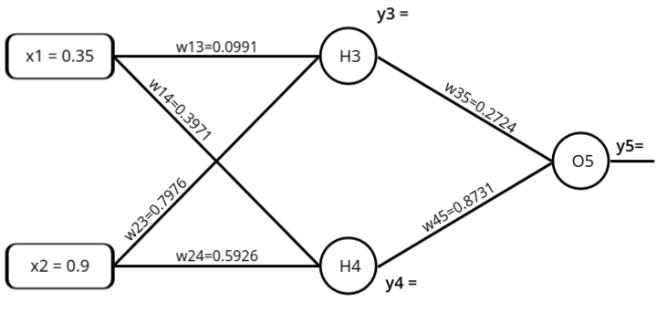

Feed Forward Network
Feedforward neural networks (FNNs) are a class of artificial neural networks (ANNs) where the information moves in one direction—forward—from the input nodes, through the hidden layers, and finally to the output nodes. There are no cycles or loops in the network, which is why it's called "feedforward." This network structure is one of the simplest and most commonly used models in machine learning and deep learning for a variety of tasks such as classification, regression, and pattern recognition.
Key Components:
- Input Layer: This layer receives the input data. The number of neurons in this layer corresponds to the number of input features in the dataset.
- Hidden Layer(s): These layers are where computations take place using weights and activation functions. A feedforward network can have one or more hidden layers, making it either a shallow or deep neural network. The hidden layers are responsible for extracting and transforming features from the input data.
- Output Layer: The final layer produces the network's output, which could be a class label (in classification tasks) or a continuous value (in regression tasks). The number of neurons in the output layer depends on the task, such as the number of classes for classification.
- Weights and Biases: Weights determine the influence of a particular input on the output, while biases adjust the output along with the weighted sum of inputs, helping the network fit the data better.
- Activation Functions: Activation functions (e.g., sigmoid, ReLU, or tanh) introduce non-linearity into the network, enabling it to learn complex patterns.
Learning Process:
- The training process of an FNN involves adjusting the weights and biases of the network to minimize the error between the predicted and actual outputs. This is typically done using optimization algorithms such as gradient descent, and the error is measured using a loss function (like mean squared error for regression or cross-entropy for classification).
- Feedforward networks rely on the concept of supervised learning, where they are trained using labeled datasets. During training, the network computes an output, compares it with the actual label, and backpropagates the error through the network to update the weights in such a way that future predictions become more accurate.
Variants of Feedforward Networks
There are several extensions of the basic feedforward network model, which enhance its functionality for specific tasks. Two popular variants are:
- Back propagation Neural Network (BPN): This is an extension of the feedforward network that uses the back propagation algorithm to update the weights during the training process. BPN is one of the most commonly used learning algorithms for feedforward networks, especially for multi-layer perceptrons (MLPs). It minimizes the error by propagating it backward through the network layers.
- Radial Basis Function Network (RBFN): RBFN is another variant of the feedforward network, but it uses radial basis functions as activation functions. RBFNs are particularly useful for interpolation problems, classification, and regression tasks. They consist of an input layer, a hidden layer with radial basis function neurons, and an output layer, typically using linear neurons.
Backpropagation Neural Network (BPN)
- It is a standard method for training Artificial Neural Networks (ANNs).
- BPN is a method of continuously adjusting the weights of the connections in the network to minimize the difference between the actual output and the desired output. This method aims to find the minimum value of the error in the weight space using the delta rule of gradient descent.
Steps in BPN:
- Input x is introduced to the network through pre-connected paths.
- Inputs are modeled using randomly assigned weights w.
- Calculate the output of each neuron, propagating from the input layer to the hidden layer, and then to the output layer.
- Calculate the error at the output layer. The error can be computed as the difference between the actual output and the desired output (i.e., Error = Actual Output - Desired Output).
- The error is then propagated backward, from the output layer to the hidden layer, and then back to the input layer. The weights are adjusted at each layer to reduce the error. This process is repeated iteratively until the error is minimized.
Confusion?
- Even though backpropagation involves "going backward," this backward flow occurs only during the training phase. The backpropagation algorithm computes the gradients of the error with respect to each weight in the network by working backward, but this process is purely for adjusting the weights and is not part of the actual inference or data flow during prediction.
- Thus, during inference or the actual operation of the network (when you're making predictions), the data still flows strictly in the forward direction—from inputs to outputs. This is why networks trained using backpropagation are still considered feedforward networks. The term "feedforward" refers to how information is processed when the network is used for predictions, not how it learns.
- BPN ko feedforward network ke under isliye include karte hain kyunki backward direction sirf
training ke time pe hota hai. Jab hum network ko train karte hain, tab error ko piche ki taraf
propagate karke weights adjust karte hain. Lekin jab actual prediction karte hain, yaani jab hum
model ko real data dete hain, toh data sirf forward direction mai flow hota hai—input se output
tak.
Yeh jo term 'feedforward' hai, yeh sirf prediction ke process ke baare mein hai, training ke time pe kya hota hai, usse nahi. Isliye, BPN ko feedforward neural network mana jata hai, kyunki prediction ke waqt data forward hi move karta hai.
Example Problem: Assume that the neurons have a sigmoid activation function, perform a forward pass and a backward pass on the network. Assume that the actual output of y is 0.5 and learning rate is 1.

Forward Pass: Compute output for y3, y4 and y5.
- aj = \( \sum_{j} (w_ij * x_i) \)
- y3 = f(a1) = \( f(a1) = \frac{1}{1 + e^{-a_1}} \)
a1 = (w13 * x1 ) + (w23 * x2) = 0.755
y3 = f(0.755) = \( f(a1) = \frac{1}{1 + e^{-0.755}} \) = 0.68 - y4 = f(a2) = \( f(a2) = \frac{1}{1 + e^{-a_2}} \)
a2 = (w14 * x1 ) + (w24 * x2) = 0.68
y4 = f(0.68) = \( f(a1) = \frac{1}{1 + e^{-0.68}} \) = 0.6637 - y5 = f(a3) = \( f(a3) = \frac{1}{1 + e^{-a_1}} \)
a3 = (w35 * y3 ) + (w45 * y4) = 0.801
y5 = f(0.801) = \( f(a3) = \frac{1}{1 + e^{-0.801}} \) = 0.69 - Error = ytarget - y5 = -0.19
yj = f(aj) = \( f(x) = \frac{1}{1 + e^{-a_j}} \)
To get closure to the desired output we need to update the weight.
Each Weight changed by:
- Δwij = ηδjOi
- δj = Oj(1 - Oj)(tj - Oj) if j is an output unit
- δj = Oj(1 - Oj)\( \sum_{k}\)δkwkj if j is a hidden unit
- where η is a constant called the learning rate
- tj is the correct output for unit j
- δj is the error measure for unit j
- Oi represents the output of the unit i in the previous layer. In the case of a hidden or output unit, it refers to the activation value of that unit.
Backward Pass: Compute δ3, δ4 and δ5

- For output unit:
δ5 = y5(1-y5)(ytarget - y5)
= 0.69*(1-0.69)*(0.5-0.69) = -0.0406 - For hidden unit:
δ3 = y3(1-y3)w35*δ5
0.68*(1-0.68)*(0.3*(-0.0406)) = -0.00265 - For hidden unit:
δ4 = y4(1-y4)w45*δ5
0.6637*(1-0.6637)*(0.9*(-0.0406)) = -0.0082
Compute new weights
Δwij = ηδjOi
- Δw13 = ηΔ3x1 = 1 * (-0.00265) * 0.35 =
−0.0009275
Δw13(new) = Δw13 + w13(old) = −0.0009275 + 0.1 = 0.0991 - Δw14 = ηΔ4x1 = 1 * (-0.0082) * 0.35 =
-0.00287
Δw14(new) = Δw14 + w14(old) = -0.00287 + 0.4 = 0.3971 - Δw23 = ηΔ3x2 = 1 * (-0.00265) * 0.9 =
-0.002385
Δw23(new) = Δw23 + w23(old) = -0.002385 + 0.4 = 0.7976 - Δw24 = ηΔ4x2 = 1 * (-0.0082) * 0.9 =
-0.00738
Δw24(new) = Δw24 + w24(old) = -0.00738 + 0.6 = 0.5926 - Δw35 = ηΔ5y3 = 1 * (-0.0406) * 0.68 =
-0.0276
Δw35(new) = Δw35 + w35(old) = -0.0276 + 0.3 = 0.2724 - Δw45 = ηΔ5y4 = 1 * (-0.0406) * 0.6637 =
-0.0269
Δw45(new) = Δw45 + w45(old) = -0.0269 + 0.9 = 0.8731
Forward Pass: Compute output y3, y4 and y5.
- y3 = f(a1) = \( f(a1) = \frac{1}{1 + e^{-a_1}} \)
a1 = (w13 * x1 ) + (w23 * x2) = 0.7525
y3 = f(0.7525) = \( f(a1) = \frac{1}{1 + e^{-0.7525}} \) = 0.6797 - y4 = f(a2) = \( f(a2) = \frac{1}{1 + e^{-a_2}} \)
a2 = (w14 * x1 ) + (w24 * x2) = 0.6797
y4 = f(0.6797) = \( f(a1) = \frac{1}{1 + e^{-0.6797}} \) = 0.6620 - y5 = f(a3) = \( f(a3) = \frac{1}{1 + e^{-a_1}} \)
a3 = (w35 * y3 ) + (w45 * y4) = 0.7631
y5 = f(0.7631) = \( f(a3) = \frac{1}{1 + e^{-0.7631}} \) = 0.6820 (Network Output) - Error = ytarget - y5 = -0.182
Radial Basis Function Network (RBFN)
What is an RBFN?
A Radial Basis Function Network (RBFN) is a type of artificial neural network that uses radial basis functions
(RBFs) to map input data into an output. It’s mainly used for classification, regression, and function approximation.
The network is especially useful for handling non-linear data, where relationships between the inputs and outputs are not
simple and straight-forward.
How Does an RBFN Work?
RBFNs have a simple but powerful design that works in three main layers. Let's break down each part:
- Three-Layer Structure:
RBFNs are built with three layers:
- Input Layer: The input layer receives the raw data (e.g., features or numbers).
- Hidden Layer: This is where the magic happens. The hidden layer neurons have specific "centers" that measure how far the input data is from the center. This is done using a radial basis function (e.g., the Gaussian function).
- Output Layer: This layer gives the final result. The weighted sum of the values from the hidden layer is passed here to produce the output.
- Using Distance for Classification: The key idea behind RBFNs is that each neuron in the hidden layer has a "center point." When new input comes in, the network calculates how far the input is from these centers. The closer the input is to a center, the stronger the output signal. This helps the network classify or predict outputs based on these distances.
Training an RBFN
Now that we know how the network is structured, let's talk about how the network learns and adjusts:
- Step 1: Find the Centers: The centers of the hidden layer neurons are first chosen. This can be done using methods like k-means clustering, which groups similar inputs together and identifies the center of each group.
- Step 2: Adjust the Weights: After determining the centers, the network adjusts the weights between the hidden and output layers. These weights are fine-tuned using methods like gradient descent or least squares, helping the network learn how to make accurate predictions.
Why Use RBFNs?
RBFNs are particularly useful for solving complex problems because of their ability to handle non-linear relationships. Here’s why they stand out:
- Handles Non-Linear Data: RBFNs are great for problems where the relationship between inputs and outputs isn't linear. They can transform complex, non-linear data into a form that is easier to model.
- Fast Training: RBFNs often train faster than other neural networks because the network only needs to adjust the weights between the hidden and output layers, not the centers.
- Good for Function Approximation: RBFNs are good at approximating unknown functions, making them ideal for tasks like time-series prediction, forecasting, and control systems.
Real-Life Example: Predicting House Prices
Let’s say you want to predict the price of a house based on features like location, size, and number of bedrooms. An RBFN works by calculating the distance between these input features and learned "center" points from similar houses, then giving you a price prediction. It’s particularly good when the relationship between the features and the price isn’t simply linear, like if the price increases disproportionately with location or size.
Feedback Neural Networks (Recurrent Neural Networks)
Feedback neural networks, also known as recurrent neural networks (RNNs), are a class of artificial neural networks where connections between the neurons form directed cycles, allowing information to be fed back into the network. Unlike feedforward networks where the information moves strictly in one direction, feedback networks allow for loops, meaning the network can retain information about previous inputs. This makes them suitable for tasks where the current output depends not only on the current input but also on past inputs, like sequence prediction, time-series forecasting, and language modeling.
Key Components:
- Input Layer: The layer where the input data is received, similar to feedforward networks.
- Hidden Layers: These layers, like in feedforward networks, perform computations based on the input data. However, in feedback networks, hidden layers often retain information about previous inputs, enabling the network to learn from sequential patterns.
- Output Layer: This layer produces the final prediction or classification result. The number of neurons depends on the task.
- Recurrent Connections: The hallmark of feedback networks is their recurrent connections, where outputs of neurons can be fed back into themselves or previous layers. This feedback loop enables the network to retain memory over time, a feature that's crucial for tasks like sequential data processing.
- Weights and Biases: Similar to feedforward networks, feedback networks have weights and biases that are adjusted during training to minimize the error between predicted and actual outputs.
- Activation Functions: These are used to introduce non-linearity into the network, which helps in learning complex patterns.
Learning Process:
The training of feedback neural networks involves propagating the error back through time, which is done using algorithms such as Backpropagation Through Time (BPTT). Since the network has a memory of previous inputs, learning becomes more complex compared to feedforward networks. Feedback networks are capable of handling time-dependent data because they can learn from the temporal dependencies present in the input sequences.
Varianst of Feedback Networks
There are several important types of feedback networks that specialize in different tasks.
Two notable examples are:
- Hopfield Network: The Hopfield network is a type of recurrent neural network that serves as a content-addressable memory system. It's designed for associative memory and pattern recognition tasks. Each neuron in a Hopfield network is connected to every other neuron, forming a fully connected network. Once trained, the network can retrieve a stored pattern even from partial or noisy inputs.
- Bidirectional Associative Memory (BAM): BAM is another type of recurrent neural network that is used for pattern recognition and associative memory. It can store pairs of patterns (input-output pairs), and given one part of the pair, it can retrieve the other. Unlike the Hopfield network, BAM works bidirectionally, meaning it can retrieve an output from a given input and vice versa. It's often used for applications requiring associative recall.
Hopfield Network
The Hopfield Network is a type of neural network used for remembering patterns and retrieving them when given incomplete or noisy information. Think of it like your brain recognizing a friend’s face even if they’re wearing sunglasses or a hat.
Key Concepts:
-
Neurons and States:
The Hopfield network is made up of simple units called neurons. Each neuron can have
only two states: on or off (typically represented as
+1and-1). - Connections Between Neurons: Every neuron is connected to every other neuron, but not to itself. These connections have weights, which decide how strongly one neuron influences another.
- Pattern Storage: The Hopfield network can store patterns (like pictures, sounds, or any data). Once it learns a pattern, it can recall it from partial or distorted input. For example, if the network is trained to remember a face, it can still recognize it even if the face is blurry.
-
How the Network Works:
- Learning: The Hopfield network learns by adjusting the weights between neurons based on the patterns you give it. This process ensures that the network can later recall these patterns.
- Recall: When you give the network a part of a pattern (like a blurry version of a face), it updates the neuron states until it matches the closest pattern it remembers. This process happens in small steps, one neuron at a time.
- Stable States: A Hopfield network has special stable states, called attractors. Once the network reaches a stable state, it stops changing. These stable states correspond to the patterns it has learned.
- Energy Minimization: Hopfield networks work by trying to minimize an "energy" function. This means the network always moves towards a more stable pattern, just like a ball rolling downhill until it reaches the bottom.
Why Use Hopfield Networks?
- They are great for associative memory, where you want to remember something based on partial input.
- They’re used in pattern recognition, such as recognizing handwriting, faces, or other types of data.
Real-World Example
Imagine you give a Hopfield network a picture of a cat to remember. Later, you give it a blurry or incomplete version of the cat, and the network will fill in the missing details to recall the full image.
Bidirectional Associative Memory (BAM)
Bidirectional Associative Memory (BAM) is a type of neural network that links two sets of patterns together, so you can recall one pattern if you know the other. It works by associating pairs of patterns, and it can retrieve one pattern from either side of the pair. This makes it useful for situations where two different patterns are connected, like matching translations between two languages or linking two related items.
Key Concepts
- Bipolar Neurons: BAM uses neurons that can only have two possible states:
+1(on) or-1(off). These simple states are used to represent the presence or absence of a particular pattern. - Two Layers: BAM has two separate layers of neurons, which are the X layer and the Y layer. Each layer contains a pattern, and the neurons in the X layer are connected to neurons in the Y layer. These layers are designed to hold different patterns that are related to each other.
- Bidirectional Recall: BAM is special because it can recall the corresponding pattern from the opposite layer. For example, if you input a pattern into the X layer, BAM will find the matching pattern in the Y layer. Similarly, if you provide a pattern to the Y layer, BAM can recall the matching pattern from the X layer. This bidirectional linking is key to BAM’s functionality.
How BAM Works
- Learning Process: BAM learns by adjusting the strength of connections between the neurons in the X and Y layers. When BAM is given a pair of patterns, one pattern in the X layer and the corresponding pattern in the Y layer, the network strengthens the connections between neurons that represent these patterns. This enables BAM to recall the patterns later when given part of either pattern.
- Recall Process: Once BAM has learned the associations between the patterns, it can recall the complete pattern if given an incomplete or partial input. For example, if you input part of the pattern from the X layer, BAM will use its learned connections to retrieve the corresponding pattern from the Y layer, and vice versa. This is done through a process of updating the states of the neurons until the most likely matching pattern is found.
Why Use BAM?
- BAM is great for pattern association, where you need to link two sets of patterns together. For example, in machine translation, BAM can associate words in one language with their equivalent words in another language.
- It’s also useful in applications where data comes in pairs and needs to be recalled together, such as in image recognition or data retrieval systems where knowing one piece of information helps you retrieve the other.
Real-World Example
Imagine you train BAM to link English words with their French translations. If you input the word "dog" into the X layer, BAM will recall the French word "chien" in the Y layer. On the other hand, if you input "chien" into the Y layer, BAM will recall "dog" in the X layer. This bidirectional recall makes BAM useful for language translation tasks where you need to recall one translation after knowing the other.
Self-Organizing Feature Maps (SOFM)
- SOFMs, also called Kohonen networks, are a type of artificial neural network. Think of them like a tool that helps organize and make sense of complicated data. What makes SOFMs special is that they don’t need labels to learn. Instead, they figure things out on their own by studying patterns in the data.
- Here’s what they do:
- Make the data simpler: They take high-dimensional data (data with lots of features) and turn it into something easier to look at—usually a 2D map.
- Keep similar things together: If two pieces of data are alike, SOFMs make sure they are placed close to each other on the map.
- They’re especially useful for:
- Clustering: Grouping similar items together.
- Visualization: Making it easier to see patterns in the data.
- Dimensionality reduction: Shrinking large, complex data into a simpler form while keeping its essence.
- A cool feature of SOFMs is that they preserve the "shape" of the data. Imagine spreading dots on a sheet of paper in a way that clusters of similar dots stay close together. This is what SOFMs do—they map the data in a way that keeps the original relationships intact.
Learning Process:
The learning process of a Self-Organizing Feature Map (SOFM) begins by setting up the network with
random weights. Think of these weights as "guesses" that the network makes about how to match the input
data.
When an input is given to the network, it identifies the Best Matching Unit (BMU).
The BMU is like the closest match or "best fit" among all the network's guesses for that input.
Next, the network updates the weights of the BMU and its nearby units to bring them closer to the
input. This adjustment makes the network better at recognizing similar patterns in the future.
Over time, the learning rate (how much the weights change) and the neighborhood size (how many
nearby units are adjusted) get smaller. This fine-tunes the network to improve accuracy.
SOFMs are useful because they can group similar data points together and show how data is related in
a structured way. They are often used in tasks like recognizing patterns, grouping data, and finding
important features in large datasets.
Variants of Self-Organizing Feature Maps:
There are several variations of SOFM, each designed for specific tasks. Here are two well-known ones:
-
Self-Organizing Maps (SOM): These are the most popular type of SOFM, created by
Teuvo Kohonen.
Imagine SOM as a way to organize data into a two-dimensional grid while keeping related data points close together. It's like arranging a messy pile of papers into neat rows based on their content.
SOMs are great for tasks like grouping similar data (clustering), recognizing patterns, and simplifying complex data into a visual format that's easier to understand. -
Learning Vector Quantization (LVQ): LVQ is a supervised learning method, meaning it
works with labeled data.
Think of it as a combination of SOFM's ability to group data and the power to classify it into specific categories.
During training, LVQ adjusts its weight vectors to match the correct labels, improving its ability to sort inputs into predefined classes. It's often used in situations where the goal is to correctly label or categorize data.
Self-Organizing Maps (SOM)
Self-Organizing Maps (SOM) are a type of neural network used for organizing and visualizing data without needing labels. They group similar data together, making it easier to understand patterns, especially in high-dimensional data. Think of it like sorting a pile of mixed items into categories based on their similarities, but without knowing what categories to expect in advance.
Key Concepts
- Unsupervised Learning: SOM is an unsupervised learning algorithm, meaning it doesn't need labeled data. It learns by finding similarities in the input data and organizing them accordingly.
- Topological Map: The SOM creates a 2D map, where similar data points are placed close to each other, allowing you to see patterns in the data visually.
- Neurons and Grid: The network consists of a grid of neurons, each representing a group of similar data points. Each neuron adjusts its “weight” (value) to match the input data during training.
How SOM Works
- Training: SOM is trained by presenting input data repeatedly. The neurons adjust their weights to better match the data. With each step, the neurons closest to the input data change more.
- Best Matching Unit (BMU): The neuron that is closest to the input data (based on its weight) is called the Best Matching Unit (BMU). This neuron and its neighbors adjust their weights to match the input better.
- Neighborhood Function: The adjustment happens not just at the BMU, but also in nearby neurons. Neurons that are closer to the BMU adjust more, helping to group similar data together in the map.
Why Use SOM?
- Data Visualization: SOM is great for turning complex, high-dimensional data into a simple 2D map, making patterns easier to see.
- Clustering: It’s useful for clustering similar data points together, even when you don't know the groups in advance.
- Dimensionality Reduction: SOM reduces the complexity of data while maintaining its structure, making analysis easier.
Real-World Example
Imagine you have data on customers’ shopping habits, including information like age, income, and products bought. A SOM can group customers with similar behaviors together. After training, you can visualize these customer groups on a 2D map, where similar customers are close to each other, helping you find patterns and insights.
Learning Vector Quantization (LVQ)
Learning Vector Quantization (LVQ) is a supervised learning algorithm used for classification tasks. It groups data into categories using prototypes, which are reference points that represent different classes. When a new input comes in, LVQ finds the closest prototype and assigns it to the corresponding category.
Key Concepts
- Supervised Learning: LVQ is supervised, meaning it learns from labeled data to classify new inputs into predefined categories.
- Prototypes: Prototypes are the reference points that represent classes in the data. They are adjusted during training to improve classification accuracy.
- Winner-Takes-All Rule: When an input is presented, the closest prototype (the "winner") is updated to better match the input, strengthening its class representation.
How LVQ Works
- Initialization: Start with a set of prototypes representing the different classes in the training data.
- Training: The network presents input vectors, and the closest prototype is selected. Prototypes are adjusted based on whether they represent the correct class or not.
- Prototype Adjustment: Correct prototypes move closer to the input data, while incorrect prototypes move further away, reducing classification errors.
Why Use LVQ?
- Simple and Interpretable: LVQ is easy to understand and visualize, as the classification boundaries are based on prototypes.
- Effective for Classification: It works well for problems where data can be clustered into clear categories.
- Versatile: LVQ can be applied to many types of classification tasks, like image recognition or medical diagnosis.
Real-World Example
Imagine classifying flowers based on features like petal length and width. LVQ would create prototypes for different flower types (e.g., roses, lilies). As the network learns, these prototypes adjust to better represent each flower type, enabling accurate classification of new flowers.